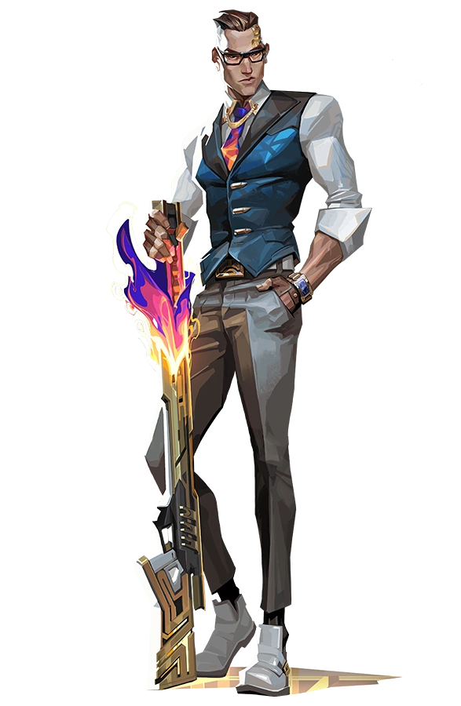

Хай, меня зовут Ансар, но вы также можете знать меня как FullMetalMonry. Слева вы видите моего мейна в Valorant — Chamber.
Chamber — это элегантный французский агент, специализирующийся на устранении противников с помощью точных выстрелов и высоких технологий. Его обилки позволяют ему эффективно контролировать карту и быстро уничтожать врагов.
Вот список его способностей:
- Trademark (C) — Chamber устанавливает ловушки, которые сканируют окружающую территорию и замедляют врагов в радиусе, если они попадают в зону действия. Это идеальный способ контроля подходов и защиты точек.
- Headhunter (Q) — Модульная пистолетная пушка, которая позволяет Chamber делать точные выстрелы по врагам. Это не просто обычный пистолет — за кредиты ты можешь усилить его и наносить мгновенные, смертельные удары по головам.
- Rendezvous (E) — Chamber ставит две точки телепорта. Когда угрожает опасность или ты хочешь быстро сменить позицию, он может мгновенно телепортироваться между этими точками. Это позволяет ему быть крайне мобильным и неожиданным для врагов.
- Tour De Force (X) — Его ультимативная способность. Chamber вызывает свою персонализированную снайперскую винтовку, которая уничтожает любого с одного попадания. В дополнение к этому, после каждого выстрела на месте убитого врага появляется замедляющая зона, создавая возможность для контроля противников.